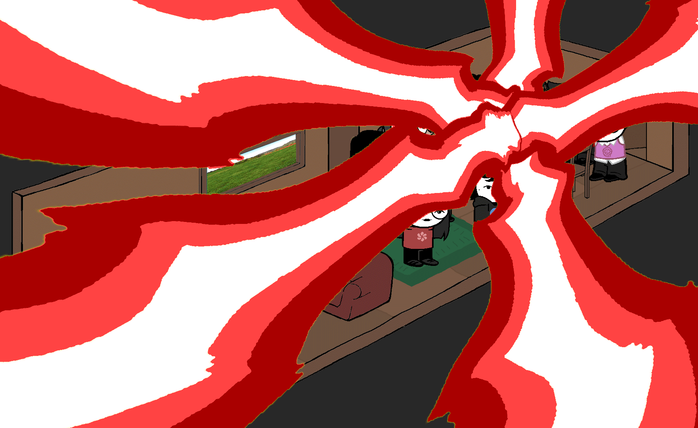

Light ect. ect.

It had worked. The light had a crimson tint to it, just like the color of the button that was pressed. Even though this was the 3rd time this still startled most people. On top of the machine stood a small dinosaur. Everyone looked inside and instinctively waited to see if it moved. It stood still.
Alp: AHAHAH! I CAN'T BELIEVE IT!
Alp slowly reached to touch the animal and because the animal gave no reaction he stared at it in confusion. He touched the small animal and it felt real. It's skin and it's eyes... Everything about the animal felt real. But it wasn't moving. A perfect taxidermy.
Alp: I wish it were alive but we must abide by the rules of mother nature. But golly gee gorillas this is still amazing! It shall be named Calamari!
This meant that the theory was true, some buttons worked with different people. And that they all could create a variety of magical items. And so... It began.
> Create a ton of magical itemsGo Back